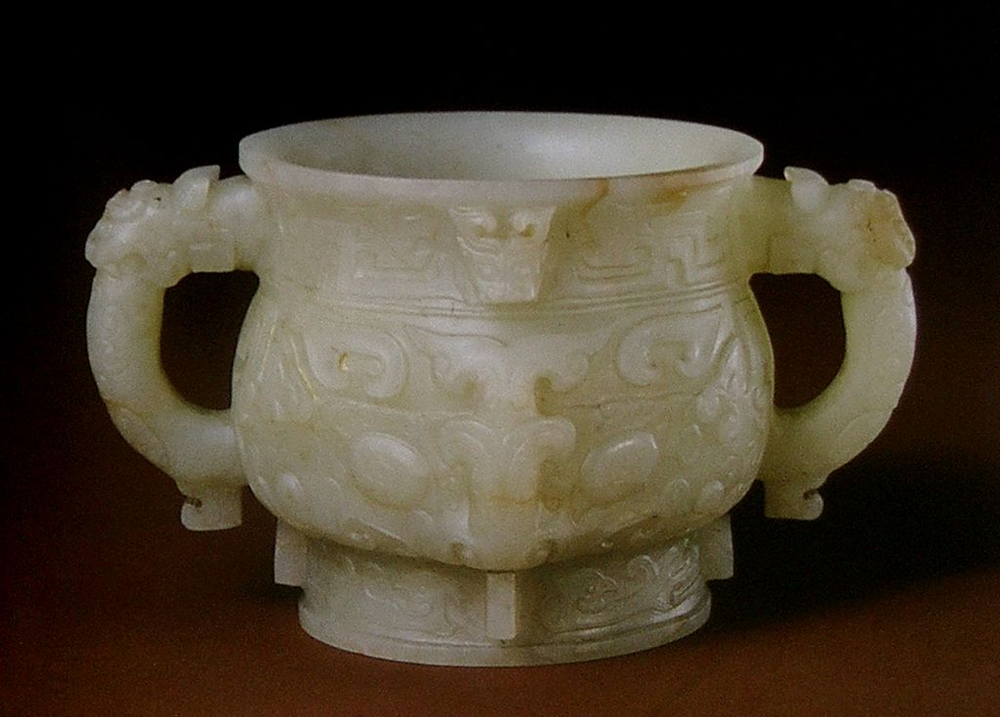
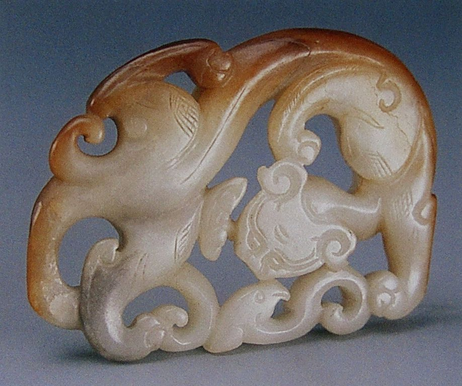
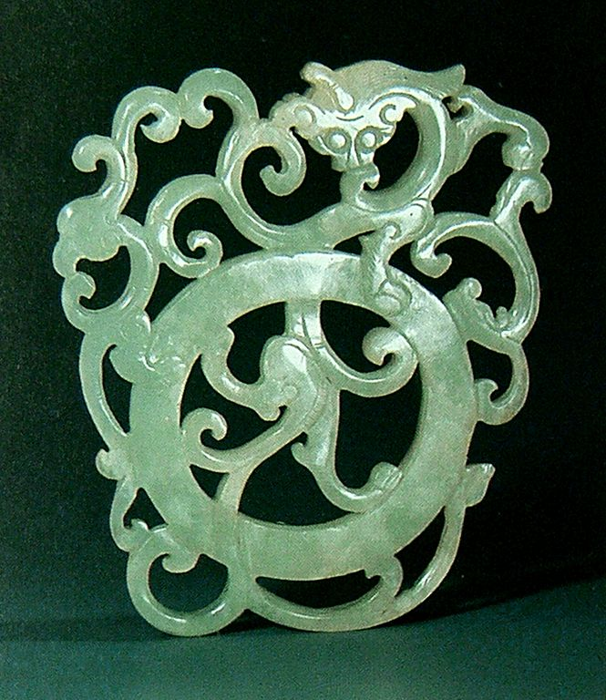
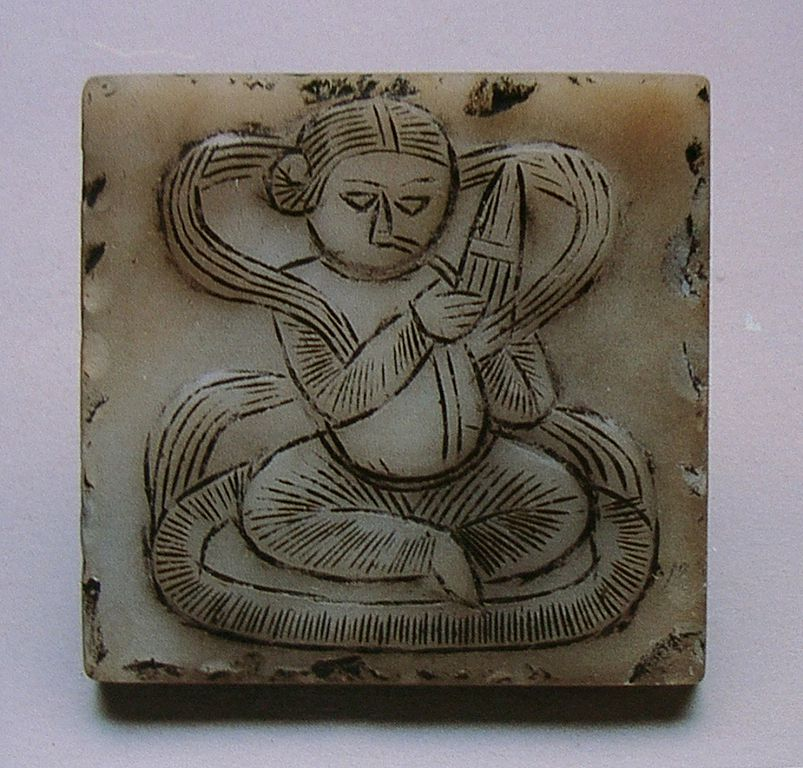
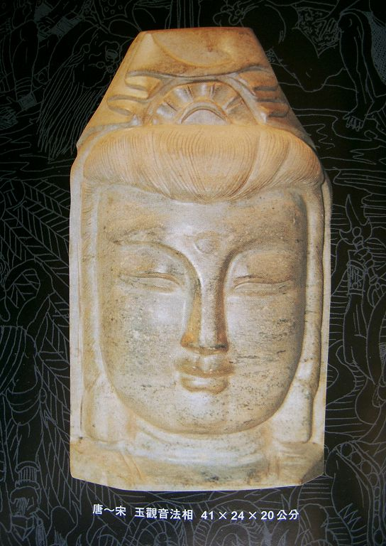

中国玉文化是一首凝固的史诗，有着浓浓的历史沉淀感，每一段历史，玉器都有它特殊的精神气质；每一段历史，玉器都有它特有的形式美感。 5.唐宋金元时期玉器工艺——西域之风 造型新颖 魏晋南北朝时期，战争频繁，社会动荡，琢玉几乎停滞。至唐、宋、金、元，玉器工艺随经济复苏再度繁荣。 ① 唐代玉器工艺。唐代玉器工艺品种有首饰玉（如釵、簪、手镯）等，装饰玉（如飞禽、走兽、人物）等，还出现了实用性玉器，（如医用用具、梳妆用具、生活饮器）等，唐代玉器造型趋向雅致、写实，体现出饱满、健康、蓬勃向上的时代风貌；造型纹饰大胆吸收外来艺术精华，使一代琢玉工艺充满创意和活力。 ② 宋代玉器工艺。宋代好玉之风遍及宫廷内外，玉器制作既有宫廷的艺术珍品，又有民间使用的小件玉饰。具有相当规模的店铺，玉器市场出现。宋代玉器品种有服饰佩玉、文房摆设、日用器皿、等。宋代崇尚古玉质朴、典雅的风格，炉瓶等仿古玉器盛行，宋代玉器装饰纹样生活气息浓郁，风格秀丽工整、优雅精美，广泛采用镂雕技艺；雕琢细致、光挺、玲珑。 ③ 金元时代玉器工艺。金元时代有两类玉器颇具特点，一类是春水玉，另一类是秋山玉。春水玉以荷叶、莲花、水草、鹘欲捉鹅等为主要图案；秋山玉以山石、树木、虎和群鹿为主要表现题材。金元时代琢玉镂雕采取管钻多向打孔方法，增强玉器作品的层次感。元代玉器表面往往留有砣痕，琢工质朴有力；加之善于透雕技巧，使玉器产生简素中见丰富的艺术效果。 北齐 玉佩
金代 “秋山”玉炉顶
 金代 白玉雕鹘捉鹅图 金代 白玉雕鹘捉鹅图金代 青玉山子
 金元 青玉巧作山石卧虎 金元 青玉巧作山石卧虎辽代 秋山玉虎
辽代 玉孔雀
明 白玉兽面纹兽耳炉
明 碧玉螭耳杯
明 玉鸠
明代 白玉 螭凤
 明代 白玉雕 亭亭玉立佩 明代 白玉雕 亭亭玉立佩明代 白玉雕太平景象摆件
明代 白玉瑞兽摆件
明代 螭凤纹玉饰
明代 黄玉卧犬
明代 青玉莲瓣壶
 明代 青玉兽形砚滴 明代 青玉兽形砚滴明代 兽面云纹玉圭
 明代 双龙挂璜 明代 双龙挂璜明代 团龙玉佩
明代 玉雕龙凤耳杯
明代 玉刚卯
明晚期 白玉镂空桃形龙纹带板
明中期 青玉兽面纹冲耳炉
 宋 白玉卧狗 宋 白玉卧狗宋 青玉仕女佩
 宋代 白玉 双童子 宋代 白玉 双童子宋代 白玉雕双兔秋山图
 宋代 白玉镂空云龙带环 宋代 白玉镂空云龙带环 宋代 莲花玉佩 宋代 莲花玉佩宋代 牛型水盂
宋代 玉鬲
宋代 玉兔
宋代 云、雷、螭龙纹玉觥
 唐 伎乐飞天 唐 伎乐飞天 唐 玛瑙海棠式盏托 唐 玛瑙海棠式盏托唐代 白玉吹笙人带铐 金夸
唐代 白玉花卉纹梳子背
唐代 白玉乐舞胡人铊尾
唐代 白玉嵌金佩
唐代 玛瑙羚羊首杯
 唐代 青玉飞天 唐代 青玉飞天唐代 玉飞鹰
唐代 玉人鹿图佩
唐-宋 玉观音法相
图1-6明 白玉 花纹 片
图4-1 明 青玉兽形砚滴
元 白玉镂雕鹭鸶荷莲炉盖
元 青玉雕螭双环饰件
元代 龟鹤纹饰
元代 黑白玉巧雕“春水”佩
 元代 玉镂雕雁穿莲饰件 元代 玉镂雕雁穿莲饰件元代 玉踏云瑞兽
子冈白玉牌（反面）
子冈白玉牌（正面）
|
| 珠宝设计网站 中国珠宝设计网 国际珠宝网 傲宝网 BACCARAT |
雕塑设计网站 中国雕塑网 |
玉器图库 一些挂件 一些手把件 一些摆件 |
玉器设计与雕刻大赛 上海玉器雕刻神功奖 上海玉器雕刻玉龙奖 北京玉器雕刻天工奖 |
玉器设计与工艺发展动态 玉器设计与工艺过去 玉器设计与工艺现在 玉器设计与工艺未来 |